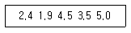

산업위생관리기사 (2007-03-04 기출문제)
1과목: 산업위생학개론
1. 다음 중 최대 작업역의 설명으로 가장 적당한 것은?
- 최대한 움직인 상태에서 상지를 뻗쳐서 닿는 범위
- 최대한 움직인 상태에서 전박과 손으로 조작할 수 있는 범위
- 움직이지 않고 상지를 뻗쳐서 닿는 범위
- 움직이지 않고 전박과 손으로 조작할 수 있는 범위
(정답률: 75%)

2. 다음 중 근로자의 피로 예방대책과 거리가 가장 먼 것은?
- 불필요한 동작을 피하고, 에너지 소모를 적게한다.
- 작업과정에 적절한 간격으로 휴식시간을 둔다.
- 정적인 작업만을 하게 한다.
- 각 개인마다의 작업량을 일정 수준으로 조절한다.
(정답률: 89%)
3. 16세기 경 “모든 물질은 독이 있다. 다만 그 양이 문제이다.”라고 말한 독성학의 아버지로 불리우는 사람은?
- Ulrich Ellenbog
- Plint the Elder
- Agrucola
- paracelsus
(정답률: 75%)
4. 작업의 강도가 클수록 작업시간이 짧아지고 휴식시간이 길어지며 실동율이 떨어진다. 사이또의 공식을 사용한 작업대사율(RMR)이 5일때 실동율은?
- 70%
- 65%
- 60%
- 55%
(정답률: 60%)
5. 다음은 전신피로의 정도를 평가하기 위하여 맥박을 측정한 결과이다. 심한 전신피로 상태라고 판단되는 경우는?
- HR30~60 = 116, HR150~180 = 102, HR60~90 = 108
- HR30~60 = 114, HR150~180 = 92, HR60~90 = 118
- HR30~60 = 110, HR150~180 = 95, HR60~90 = 108
- HR30~60 = 107, HR150~180 = 89, HR60~90 = 101
(정답률: 70%)
6. 심리학적 적성검사 중에서 기능검사 대상에 해당되는 항목은?
- 직무에 관련된 기본지식과 숙련도, 사고력
- 언어, 기억, 추리, 귀납
- 수족협조능, 운동속도능, 형태지각능
- 성격, 태도, 정신상태
(정답률: 46%)
7. 조건이 고려된 NIOSH에서 제안한 중량물 취급작업의 권고치 중 감시기준(AL)을 구하기 위한 식에 포함된 요소가 아닌 것은?
- 대상 물체의 수평거리
- 대상 물체의 이동거리
- 대상 물체의 이동속도
- 중량물 취급작업의 빈도
(정답률: 71%)
8. 다음 중 산업피로에 관한 설명으로 틀린 것은?
- 피로는 비가역적 생체의 변화로 건강장해의 일종이다.
- 정신적 피로와 육체적 피로는 보통 구별하기 어렵다.
- 국소피로와 전신피로는 피로현상이 나타난 부위가 어느 정도인가를 상대적으로 표현한 것이다.
- 곤비는 피로의 축적상태로 단기간에 회복될 수 없다.
(정답률: 79%)
9. 신발 제조업에서 보건관리자 1인 이상을 반드시 두어야 하는 사업장의 규모는 상시근로자가 몇 명 이상이어야 하는가?
- 30
- 50
- 100
- 300
(정답률: 72%)
10. 산업위생통계에 대한 용어 중 측정시 발생되는 계통오차의 종류와 가장 거리가 먼 것은?
- 외계오차
- 기계오차
- 우발 오차
- 개인오차
(정답률: 69%)
11. 다음 중 노동부령이 정하는 중대재해로 볼 수 없는 것은?
- 사망자가 1인 이상 발생한 재해
- 3개월 이상의 요양을 요하는 부상자가 동시에 2인이상 발생한 재해
- 부상자 또는 직업성 질병자가 동시에 10인 이상 발생한 재해
- 노동부에 신고된 재해
(정답률: 79%)
12. 산소부채에 대한 설명이 잘못된 것은?
- 작업대사량의 증가와 관계없이 산소소비량은 계속 증가한다.
- 산소부채현상은 작업이 시작되면서 발생한다.
- 작업이 끝난 후에는 산소부채의 보상이 발생한다.
- 작업강도에 따라 필요한 산소요구량과 산소공급량의 차이에 의하여 산소부채현상이 발생한다.
(정답률: 80%)
13. 산업재해손실의 평가에 있어서 하인리히 방식기준으로 직접비와 간접비의 비율은 어느 정도로 나타나는가? (단, 직접비 : 간접비 로표현한다.)
- 1 : 2
- 1 : 4
- 1 : 8
- 1 : 16
(정답률: 79%)
14. 육체적 자업능력(PWC)이 16Kcal/min인 남성근로자가 1일 8시간 동안 물체를 운반하는 작업을 하고 있다. 이때 작업대사율은 10Kcal/min이고, 휴식시 대사율은 2Kcal/min이다. 매 시간마다 이 사람의 적정한 휴식시간은 몇 분 인가? (단, Hertig의 공식을 적용하여 계산한다.)
- 15분
- 25분
- 35분
- 45분
(정답률: 63%)
15. 다음 중 역사상 최초로 기록된 직업병은?
- 폐질환
- 납중독
- 음낭암
- 규폐증
(정답률: 63%)
16. 재해율의 종류 중 천인율에 관한 설명으로 틀린 것은?
- 재직 근로자 1000명당 일정 기간에 발생하는 재해자 수로 나타낸다.
- 재해자 수를 평균 근로자수로 나눈 값에 1000을 곱하여 계산한다.
- 재해의 경중을 나타내는 척도이다.
- 근무시간이 같은 동종의 업체끼리만 비교가 가능하다.
(정답률: 58%)
17. 피로의 종류 및 증상에 관한 설명으로 틀린 것은?
- 피로는 정신적 기능과 신체적 기능의 저하가 통합된 생체반응이 다.
- 과로는 피로상태가 축적된 상태로서 단기간의 휴식으로 회복될 수 없는 병적상태다.
- 피로는 자각적인 피로감과 더불어 점차 기증적인 저하가 일어나게 된다.
- 산업피로는 생리학적 기능변동을 인하여 생긴다고 생각할 수 있다.
(정답률: 82%)
18. 작업대사율이 3.0, 안정시 소모열량이 800Kcal, 치초대사량이 600Kcal 일 경우 작업시 소요열량은 몇 Kcal 인가?
- 2400
- 2500
- 2600
- 2700
(정답률: 48%)
19. 미국산업위생학술원(AAIH)에서 채택한 산업위생전문가의 윤리강령 중 전문가로서의 책임과 가장 거리가 먼 것은?
- 일반 대중에 관한 사항은 학술지에 발표한다.
- 기업체의 기밀은 누설하지 않는다.
- 과학적 방법의 적용과 자료의 해석에서 객관성을 유지한다.
- 전문분야로서의 산업위생을 학문적으로 발전시킨다.
(정답률: 81%)
20. 다음 중에서 피로물질이라고 할 수 없는 것은?
- 크레아틴
- 젖산
- 글리코겐
- 초성포도당
(정답률: 64%)
2과목: 작업위생측정 및 평가
21. H2SO4 10mg을 증류수에 녹여 100ml로 하였을 때 이 용액의 규정농도는? (단, H2SO4의 M.W = 98 )
- 0.01 N
- 0.02 N
- 0.001 N
- 0.002 N
(정답률: 45%)
22. 다음 중 2차 표준기구인 것은?
- 유리피스톤 미터
- 열선 기류계
- 폐활량계
- 가스 치환병
(정답률: 67%)
23. 유량, 측정시간, 회수율 및 분석 등에 의한 오차가 각각 8%, 2%, 6%, 3% 일 때의 누적오차(%)는?
- 약 10.6
- 약 11.6
- 약 12.6
- 약 13.6
(정답률: 66%)
24. 옥외(태양광선이 내리쬐는장소)의 습구흑구온도지수(WBGT) 산출식은?
- (0.7 × 자연습구온도) +(0.2 × 건구온도) +(0.1 × 흑구온도)
- (0.7 × 자연습구온도) +(0.2 × 흑구온도) +(0.1 × 건구온도)
- (0.5 × 자연습구온도) +(0.3 × 흑구온도) +(0.2 × 건구온도)
- (0.5 × 자연습구온도) +(0.3 × 건구온도) +(0.2 × 흑구온도)
(정답률: 75%)
25. 작업환경측정시 유사노출그룹(HEG)읠 설정목적과 가장 거리가 먼 것은?
- 시료 채취수를 경제적으로 하는 데 있다.
- 모든 근로자의 노출농도를 평가하고자 하는데 있다.
- 역학조사를 수행할 때 사건이 발생된 근로자가 속한 유사노출 그룹의 노출농도를 근거로 노출원인 및 농도를 추정할 수 있다.
- 법적인 노출기중 초과여부를 판단하기 위한 설정이다.
(정답률: 63%)
26. 어떤 유해 작업장에 일산화 탄소(CO)가 표준상태(0℃, 1기압)에서 10ppm 포함되어 있다. 이 공기 1Sm3 중에 CO는 몇㎍ 포함되어 있는가?
- 9200㎍
- 10800㎍
- 11500㎍
- 12500㎍
(정답률: 39%)
27. 막여과지에 관한 설명으로 틀린 것은?
- 섬유상 여과지에 비하여 공기저항이 심하다.
- 여과지 표면에 채취된 입자들이 이탈되는 경향이 있다.
- 섬유상 여과지에 비하여 더 많은 입자상 물질을 채취 할 수 있다.
- 막여과지는 셀룰로오스에스테를, PVC, 니트로 아크릴 같은 중합체를 일정한 조건에서 침착시켜 만든 다공성의 얇은 막 형태이다.
(정답률: 58%)
28. 가스상 물질을 검지관 방식으로 측정하는 경우 측정횟수 기중으로 맞는 것은?(단, 노동부 고시기중, 가스물질 발생시간 6시간 이상)
- 1일 작업시간 동안 1시간 간격으로 6회 이상 측정하되 매 측정시간마다 2회 이상 반복 측정하여 평균값을 정한다.
- 1일 작업시간 동안 1시간 간격으로 6회 이상 측정하되 매 측정시간마다 2회 이상 반복 측정하여 최고값을 정한다.
- 1일 작업시간 동안 2시간 간격으로 3회 이상 측정하되 매 측정시간마다 2회 이상 반복 측정하여 평균값을 정한다.
- 1일 작업시간 동안 2시간 간격으로 3회 이상 측정하되 매 측정시간마다 2회 이상 반복 측정하여 최고값을 정한다.
(정답률: 60%)
29. 산소결핍 위험장소에서는 산소농도나 가연성물질 등의 농도를 측정하여야 한다. 가연성 물질의 경우 농도수준이 어느 정도로 유지되어야 하는가?
- 폭발한계의 10 % 이하
- 폭발한계의 15 % 이하
- 폭발한계의 20 % 이하
- 폭발한계의 25 % 이하
(정답률: 66%)
30. 누적소음노출량 측정기로 소음을 측정하는 경우, 기기 설정으로 적절한 것은?
- Criteria = 90dB, Exchange Rate = 3dB, Threshold = 80dB
- Criteria = 80dB, Exchange Rate = 3dB, Threshold = 90dB
- Criteria = 90dB, Exchange Rate = 5dB, Threshold = 80dB
- Criteria = 80dB, Exchange Rate = 5dB, Threshold = 90dB
(정답률: 80%)
31. 미국 OSHA와 우리나라 노동부의 작업환경측정방법에 따라 작업장내 납농도를 측정, 평가한다. 8시간 작업시간 동안 측정한 시료의 농도는 0.045mg/m3 이다. 이 경우 신뢰하한값(LCL)과 신뢰상한값(UCL)은 각각 얼마인가? (단, 납의 노출기준은 0.⑤mg/m3, 시료채취 및 분석 오차 (SAE)는 0.132 이다.)
- 0.768, 1.032
- 0.781, 0.929
- 0.979, 1.243
- 0.964, 1.258
(정답률: 49%)
32. 통계학에서 정의하는 변이계수에 대한 설명이 잘못된 것은?
- 통계집단의 측정값들에 대한 균일성, 정밀성 정도를 표현하는 것이다.
- 평균값에 대한 표준편차의 크기를 백분율로 나타낸 수치이다.
- 단위가 서로 다른 집단이나 특성값의 상호 산포도를 비교하는데 이용될 수 있다.
- 평균값의 크기가 0에 가까울수록 변이계수의 의의가 커진다.
(정답률: 81%)
33. 다음 중 실리카겔이 활성탄에 비해 갖는 장점이 아닌 것은?
- 수분과 친화력이 강하기 때문에 습도가 높은 작업장에 유리하다.
- 유독한 이황화탄솔르 탈착용매로 사용하지 않는다.
- 추출액이 화학분석이나 기기분석에 방해물질로 작용하는 경우가 적다.
- 활성탄으로 채취가 어려운 아닐린이나 아민류의 채취도 가능하다.
(정답률: 78%)
34. 입자상물질을 채취하는데 이용되는 PVC 막여과지에 대한 설명으로 맞지 않은 것은?
- 유리규산을 채취하여 X-선 회절분석법에 적합하다.
- 산에 쉽게 용해되어 금속 채취에 적당하다.
- 수분에 대한 영향이 크지 않다.
- 공해서 먼지, 총 먼지 등의 중량분석에 용이하다.
(정답률: 60%)
35. 다음 중 계통 오차의 종류로 틀린 것은?
- 측정 및 분석기기의 부정확성으로 발생된 오차
- 한가지 실험측정을 반복할 때 측정값들의 변동으로 발생되는 오차
- 측정하는 개인의 선입관으로 발생된 오차
- 측정 및 분석시 온도나 습도와 같이 알려진 외계의 영향으로 생기는 오차
(정답률: 43%)
36. 입자상물질을 채취하기 위한 은막여과지에 관한 설명으로 틀린 것은?
- 균일한 금속은을 소결하여 만든 것이다.
- 결합제나 섬유가 포함되어 있지 않다.
- 화학물질과 열에 대한 저항은 약하나 촉매역할이 가능하다.
- 코크스제조공정에서 발생되는 코크스오븐 배출물질을 채취하는데 이용된다.
(정답률: 43%)
37. 석면의 측정방법에 관한 설명으로 알맞지 않는 것은?
- 위상차현미경법은 막 여과지에 시료를 채취한 후 전처리하여 위상차현미경으로 분석한다.
- 위상차현미경법은 다른 방법에 비해 간편하나 석면의 감별이 어렵다.
- 편광현미경법은 은막 위의 석면물질에 빛을 조사하여 석면의 편광에 따른 회절성을 이용한다.
- 편광현미경법은 고형시료분석에 사용하며 석면을 감별 분석할 수 있다.
(정답률: 36%)
38. 부유분진을 기기내에 통과시키면서 광을 투사하여 분진에의한 산란광을 광전자증배관에 받아 광전류를 적분하여 이 광전류와 시간의 곱이 일정치에 도달하면 하나의 전기적 펄스를 발생하도록 한 장치는?
- 디지털 분진계
- 피에조 밸런스
- 압전형 분진계
- 전기식 분진계
(정답률: 52%)
39. 산업보건분야에서 스토크식을 대신하여 크기 1~ 50㎛인 입자의 종단속도(cm/sec)를 구하는 식으로 적절한 것은?
- 0.03 × (입자의 비중) × (입자의 직경,㎛)2
- 0.003 × (입자의 비중) × (입자의 직경, ㎛)2
- 0.03 × (공기의점성계수) × (입자의 직경, ㎛)2
- 0.003 × (공기의점성계수) ×(입자의 직경, ㎛)2
(정답률: 78%)
40. 근로자에게 노출되는 호흡성먼지를 측정하였다. 결과는 다음과 같은 농도이다. 기하평균농도의 값은 (단, 단위는 mg/m3)

- 3.04
- 3.24
- 3.54
- 3.74
(정답률: 67%)
3과목: 작업환경관리대책
41. 관내유속 2.5m/sec, 관직경 0.1m 일 때 레이놀드 수는? (단, 20℃, 1기압, 동점성계수는 1.5×10-5m2/sec)
- 1.67 × 104
- 1.86 × 104
- 2.34 ×104
- 2.87 ×104
(정답률: 54%)
42. 방진재료로 사용하는 방진고무의 장점이 아닌 것은?
- 내후성, 내유성, 내약품성이 좋아 다양한 분야의 적용이 가능하다.
- 여러 가지 형태로 된 철물에 견고하게 부착할 수 있다.
- 설계자료가 잘 되어 있어서 용수철 정수를 광범위하게 선택할 수 있다.
- 고무의 내부마찰로 적당한 저항을 가지며, 공진시의 진폭도 지나치게 크지 않다.
(정답률: 58%)
43. A공장에서 1시간에 4L의 메틸에틸케톤이 증발되어 공기를 오염시키고 있다면 이 작업장을 전체 환기하기 위한 필요 환기량 m3/min)은? (단, 21℃, 1기압, K=3, 분자량 72.06, 비중 0.8⑤, 허용기준 TLV 200ppm)
- 약 180
- 약 270
- 약 320
- 약 430
(정답률: 56%)
44. 어느 작업장의 길이, 폭, 높이가 각각 40m, 20m, 4m 이다. 이 실내에 8시간당 16회의 환기가 되도록 직격 40cm의 개구부 두 개를 통하여 공기를 공급하고자 한다. 각 개구부를 통과하는 공기의 유속(m/sec)은?
- 약 5.1
- 약 7.1
- 약 9.1
- 약 10.1
(정답률: 33%)
45. A공정에서 이산화탄소의 발생률이 1.0m3/min일 때 이산화탄소를 노출기준(5000ppm)으로 유지하기 위하여 공급해야하는 환기량(m3/min)은?(단, K=10)
- 1000
- 1500
- 2000
- 2500
(정답률: 18%)
46. 방진마스크의 필요조건으로 틀린 것은?
- 흡기와 배기저항 모두 낮은 것이 좋다.
- 흡기저항 상승률이 높은 것이 좋다.
- 안면밀착성이 큰 것이 좋다.
- 무게중심은 안면에 강한 압박감을 주지 않는 위치에 있는 것이 좋다.
(정답률: 52%)
47. 작업환경내의 덕트내부로 흐르는 유체의 관성력과 점성력의 비율을 나타내느 무차원수는?
- 마하수
- 슈미트수
- 레이놀즈수
- 프란틀수
(정답률: 76%)
48. 중력침강속도에 대한설명으로 틀린 것은? (단, 스토크스 법칙 기준)
- 입자직격의 제곱에 비례한다.
- 입자의 밀도차에 반비례한다.
- 중력가속도에 비례한다.
- 공기의 점성계수에 반비례한다.
(정답률: 60%)
49. 국소배기장치를 설계하고 현장에서 효율적으로 적용하기 위하여 적절한 제어속도가 필요하다. 이때 제어속도의 의미로 가장 알맞은 것은?
- 발생원에서 배출되는 오염물질의 발생 속도
- 후드안쪽에 흐르는 공기의 속도
- 오염물질을 처리하기 위한 풍속
- 오염물질을 후드 안쪽으로 흡인하기 위하여 필요한 최소속도
(정답률: 20%)
50. 원심력송풍기 중 후향 날개형 송풍기에 관한설명으로 틀린 것은?
- 송풍기 깃이 회전방향으로 경사지게 설계되어 충분한 압력을 발생시킬 수 있다.
- 고농도 분진함유 공기를 이송시킬 경우 긴 뒷면에 분진이 퇴적된다.
- 고농도 분진함유 공기를 이송시킬 경우 집진기 후단에 설치하여야 한다.
- 깃의 모양은 두께가 균일한 것과 익형이 있다.
(정답률: 37%)
51. 어느 유체관을 흐르는 유체의 양은220m3/min이고 단면적이 0.5m2 일 때 동압(mmHg)은? (단, 유체의 밀도 1.207 Kg/m3)
- 약 3.3
- 약 4.3
- 약 5.3
- 약 6.3
(정답률: 34%)
52. 공기가 20℃의 송풍관 내에서 20m/sec의 유속으로 흐르는 상태에서의 속도압은? (단 공기의 비중량은 1.2kg/m3 로한다.
- 약 15.5 mmHg
- 약 24.5 mmHg
- 약 33.5 mmHg
- 약 40.2 mmHg
(정답률: 58%)
53. 표준상태(0℃, 1기압)에서 공기의 비중량은 1.293kg/m3 이다. 25℃ 1기압에서 공기의 비중량은?
- 1.040kg/m3
- 1.185kg/m3
- 1.233kg/m3
- 1.312kg/m3
(정답률: 34%)
54. 분압(증기압)이 6.0mmHg 인 물질이 공기중에서 도달할 수 있는 최고농도(포화농도, ppm)는?
- 약 4800
- 약 5400
- 약 6600
- 약 7900
(정답률: 29%)
55. 전기집진장치의 장점으로 틀린 것은?
- 가연성 입자의 처리가 용이하다.
- 압력손실이 낮아 송풍기의 가동비용이 저렴하다.
- 넓은 범위의 입경과 분진농도에 집진효율이 높다.
- 고온 가스를 처리할 수 있어 보일러와 철강로 등에 설치할 수 있다.
(정답률: 45%)
56. 어떤 작업장의 음압수준이 100dB(A)이고 근로자가 NRR이 27인 귀마개를 착용하고 있다면 차음 효과는?
- 5 dB(A)
- 10 dB(A)
- 15 dB(A)
- 20 dB(A)
(정답률: 67%)
57. A용제가 400m3 의 체적을 가진 방에 저장되어 있다. 공기를 공급하기 전에 측정한 농도는 400ppm 이었다. 이방으로 환기량 40m3/min을 공급한 후 노출기준인 100ppm으로 달성 되는데 걸리는시간은? (단, 유해물질 발생은 정지, 환기만 고려)
- 약 8분
- 약 14분
- 약 23분
- 약 32분
(정답률: 37%)
58. 어느 유체관의 유속이 5m/sec 이고 관의 직경이 30mm 일 때 유량m3/hr은?
- 12.7
- 15.5
- 18.2
- 25.2
(정답률: 38%)
59. 가벼운 건조분진(원면, 곡물분, 고무, 플라스틱, 톱밥 등의 분진, 버프, 연마분진, 경금속분진)의 일반적인 반송속도기준으로 적절한 것은?
- 5 m/sec
- 10 m/sec
- 15 m/sec
- 20 m/sec
(정답률: 42%)
60. 2개의 집진장치를 직렬로 연결하였다. 집진효율 70%인 사이클론을 전처리장치로 사용하고 전기집진장치를 후처리 장치로 사용한다. 총집진효율이 98.5%라면, 전기집진장치의 집진효율은?
- 93 %
- 95 %
- 97 %
- 99 %
(정답률: 66%)
4과목: 물리적유해인자관리
61. 진동에 의한 생체영향과 가장 거리가 먼 것은?
- C5 dip 현상
- Raynaud 현상
- 내분비계 장해
- 뼈 및 관절의 장해
(정답률: 74%)
62. 자외선의 대표적인 광선인 도르노선의 파장의 범위로 옳은 것은?
- 4000 - 7000 Å
- 3150 - 4000 Å
- 2800 - 3150 Å
- 280 - 315 Å
(정답률: 60%)
63. 저온에 의한 장해에 관한 내용으로 틀린 것은?
- 피부 표면의 혈관들과 피하조직이 수축된다.
- 부종, 저림, 가려움, 심한 통증 등이 생긴다.
- 근육 긴장의 증가와 떨림이 발생한다.
- 혈압은 변화되지 않고 일정하게 유지된다.
(정답률: 79%)
64. 진동을 h인한 생체반응과 관계하는 인자와 가장 거리가 먼 것은?
- 폭로시간
- 진동수
- 방향
- 측정방법
(정답률: 46%)
65. 전리방사선(방사능)의 외부조사에 대한 방어대책으로 고려하여야 할 요소가 아닌 것은?
- 거리
- 대치
- 차폐
- 시간
(정답률: 52%)
66. 적외선의 생체작용에 관한 설명으로 잘못된 내용은?
- 적외선이 조직에 흡수되면 화학반응을 일으켜 조직의 온도가 상승한다.
- 적외선이 신체에 조사되면 일부는 피부에서 반사되고 나머지는 조직에 흡수된다.
- 조직에서의 흡수는 수분함량에 따라 다르다.
- 조사부위의 온도가 오르면 혈관이 확장되어 혈류가 증가되며 심하면 홍반을 유발하기도 한다.
(정답률: 50%)
67. 초음파의 생체작용에 대한 설명을 틀린 것은?
- 고주파성 초음파는 공기 중에서 쉽게 전파되어 생체의 전신 및 국소적으로 문제를 일으킨다.
- 작업자가 초음파에 폭로되더라도 8KHz 까지의 가청음에 대한 청력장해는 오지 않는다고 알려져 있다.
- 인간의 피부는 폭로된 초음파의 1% 만을 흡수하고 나머지는 반사되고 있다.
- 자각증상으로는 초음파 폭로 3개월 이내에 음에 대한 불쾌감이 가장 많이 오며 또한 두통, 피로, 구토 등이 나타난다.
(정답률: 44%)
68. 열경련(Heat cramp)을 일으키는 가장 큰 원인은?
- 체온상승
- 순환기계 부조화
- 중추신경마비
- 체내수분 및 염분손실
(정답률: 79%)
69. 작업장에서 사용하는 트리클로로에틸렌을 독성이 강한 포스겐으로 전화시킬 수 있는 광화학 작용을 하는 유해광선은?
- 적외선
- 자외선
- 감마선
- 마이크로파
(정답률: 53%)
70. 레이저의 물리적 특성에 대한 설명 중 옳은 것은?
- 특정 파장부위를 강력하게 감쇠시킨 복사선을 말한다.
- 파장이 극히 넓다.
- 레이저 광의 가장 민감한 표적기관은 눈이다.
- 출력은 강하나 쉽게 산란된다.
(정답률: 71%)
71. 단위시간에 일어나는 방사선 붕괴율을 나타내며, 초당 3.7 × 1010 개의 원자붕괴가 일어나는 방사능 물질의 양으로 정의 되는 것은?
- R
- Sv
- Ci
- Gy
(정답률: 59%)
72. 방사선을전리방사선과 비전리방사선으로 분류하는 인자로 볼 수 없는 것은?
- 이온화하는 성질
- 주파수
- 투과력
- 파장
(정답률: 20%)
73. 소리의 크기가 20N/m2 이라면 음압레벨은 몇 dB(A)인가?
- 110
- 120
- 130
- 140
(정답률: 62%)
74. 다음 중 전리방사선의 영향에 대하여 감수성이 가장 큰 인체 내 기관은?
- 임파구
- 뼈 및 근육조직
- 혈관
- 신경조직
(정답률: 55%)
75. 해수면에 있어서 산소분압은 약 얼마인가? (단, 표준 상태기준이다.)
- 90 mmHg
- 160 mmHg
- 210 mmHg
- 230 mmHg
(정답률: 66%)
76. 고압환경의 2차적인 가압현상(화학적 장해) 중 산소중독에 관한 설명으로 알맞지 않는 것은?
- 산소의 중독작용은 운동이나 이산화탄소의 존재로 다소 완화될 수 있다.
- 산소의 분압이 2기압이 넘으면 산소중독증세가 나타난다.
- 수지와 족지의 작열통, 시력장해, 정신혼란, 근육경련 등의 증상을 보이며 나아가서는 간질 모양의 경련을 나타낸다.
- 산소중독에 따른 증상은 고압산소에 대한 폭로가 중지되면 멈추게 된다.
(정답률: 58%)
77. 고압환경에 관한 설명으로 틀린 것은?
- 질소가스는 마취작용을 나타내서 작업력의 저하를 가져온다.
- 1차적으로 울혈, 부종, 출혈, 동통 등을 동반한다.
- 고압하의 대기가스의 독성 때문에 나타나는 현상은 2차성 압력현상이라 한다.
- 혈액과 조직의 질소가 체내에 기포를 형성하여 순환장애를 일으킨다.
(정답률: 50%)
78. 작업장의 조도를 균등하게 하기 위하여 국소조명과 전체조명이 병용될 때 일반적으로 전체조명의 조도는 국부조명의 어느 정도가 적당한가?
- 1/20 ~ 1/10
- 1/10 ~ 1/5
- 1/5 ~ 1/3
- 1/3 ~ 1/2
(정답률: 59%)
79. 다음 중 방사선의 투과력이 큰 것에서부터 작은 순으로 올바르게 나열한 것은?
- 베타 ＞ 감마 ＞ 알파
- 알파 ＞ 베타 ＞ 감마
- 감마 ＞ 베타 ＞ 알파
- 알파 ＞ 감마 ＞ 베타
(정답률: 65%)
80. 다음 중 전신진동이 인체에 미치는 영향과 거리가 가장 먼 것은?
- 레이노드 현상이 일어난다.
- 맥박이 증가하고, 피부의 전기저항도 일어난다.
- 말초혈관이 수축되고, 혈압이 상승된다.
- 자율신경 특히 순환기에 크게 나타난다.
(정답률: 53%)
5과목: 산업독성학
81. 작업자의 소변에서 마뇨산이 검출되었다. 이 작업자는 어떤 물질을 취급하였다고 볼 수 있는가?
- 클로로벤젠
- 트리클로로에틸렌
- 에탄올
- 톨루엔
(정답률: 84%)
82. 고농도에 폭로시 간장이나 신장 장해를 유발하며, 초기 증상으로 지속적인 두통, 구역 및 구토, 간부위의 압통등의 증상을 일으키는 할로겐화 탄화수소는?
- 사염화탄소
- 벤젠
- 에틸아민
- 에틸알코올
(정답률: 50%)
83. 흄(fume)은 상온 및 상압에서 어떤 상태인가?
- 고체상태
- 기체상태
- 액체상태
- 기체와 액체의 공존상태
(정답률: 67%)
84. 유해물질의 농도를 C, 노출시간을 t 라 하였을 경우 유해물질지수(K)에 대한 표현으로 적정한 것은?
- K = C2 ×t
- K = C/t
- K = t/C
- K = C ×t
(정답률: 60%)
85. LD50은 유해물질의 작용범위를 결정하는 예비 독성검사에서 얻은 용량-반응곡선으로부터 구한다. 다음중 LD50의 설명으로 틀린 것은?
- 흡입실험 경우의 치사량 단위는 ppm, mg/m3으로 표시한다.
- 일정기간(통상 30일)동안에 실험동물의 50%가 죽는 치사량을 말한다.
- LD50 에는 변역 또는 95% 신뢰한계를 명시하여야 한다.
- 치사량은 단위체중당으로 표시하는 것이 보통이다.
(정답률: 46%)
86. 미국 산업위생전문가 협의회(ACGIH)에서 규정한 유해물질 허용기준에 관한 사항과 관계없는 것은?
- TLV - TWA : 시간가중 평균농도
- TLV - STEL : 단시간(15분) 폭로의 허용농도
- TLV - C : 최고치 허용농도
- TLV - TLM : 시간가중 한계농도
(정답률: 66%)
87. 소화기로 흡수된 유해물질을 해독하느 인체 기관은?
- 신장
- 간
- 담낭
- 위장
(정답률: 69%)
88. 수은 중독에 관한 설명 중 틀린 것은 ?
- 알킬수은화합물의 독성은 무기수은 화합물의 독성보다 훨씬 강하다.
- 전리된 수은이온이 단백질을 침전시키고 thiol 기(SH)를 가진 효소작용을 억제한다.
- 주된 증상은 구내염, 근육진전, 정신증상으로 구분한다.
- 급성중독인 경우의 치료는 10% EDTA를 투여한다.
(정답률: 60%)
89. 실험동물을 대상으로 얼마간의 양을 투여했을때 독성을 초래하지는 않지만 관찰 가능한 가역거인 반응이 나타나는 양을 의미하는 용어는?
- 유효량(ED)
- 치사량(LD)
- 독성량(TD)
- 서한량(PD)
(정답률: 78%)
90. 1 ~ 5 ㎛ 크기의 입자상 물질의 주된 축적기전으로 적절한 것은?
- 충돌
- 차단
- 확산
- 침전
(정답률: 35%)
91. 산업역학에서 상대위험도의 값이 1인 경우가 의미하는 것으로 옳은 것은?
- 노출과 질병 발생사이에는 연관이 없다.
- 노출되면 위험하다.
- 노출되면 질병에 대하여 방어효과가 있다.
- 노출되어서는 절대 아니 된다.
(정답률: 59%)
92. 다음 중 단순질식제로 구분되는 것은?
- 탄산 가스
- 아닐린가스
- 니트로벤젠가스
- 황화수소가스
(정답률: 67%)
93. 1~ 5세의 소아 아미증(pica)환자에게서 발생하기 쉬운 중금속 중독은?
- 납 중독
- 수은 중독
- 카트뮴 중독
- 크롬 중독
(정답률: 68%)
94. 산업독성학 용어 중 무관찰영향수준(NOEL)에 관한 설명으로 틀린 것은?
- NOEL의 투여에서는 투여하는 전 기간에 걸쳐 치사, 발병 및 병태 생리학적 변화가 모든 실험대상에서 관찰되지 않는다.
- 양 - 반응관계에서 안전하다고 여겨지는 양으로 간주된다.
- 주로 동물실험에서 유효량으로 이용된다.
- 만성독성 시험에 구해지는 지표이다.
(정답률: 36%)
95. 다음의 유기화학물질 작용기 중에서 중추신경 활성억제작용이 가장 큰 것은?
- 알칸
- 알코올
- 유기산
- 에테르
(정답률: 63%)
96. 알데히드류에 관한 설명으로 틀린 것은?
- 호흡기에 대한 자극작용이 심한 것이 특징이다.
- 포름알데히드는 무취, 무미하며 발암성이 있다.
- 지용성 알데히드는 기관지 및 폐를 자극한다.
- 아크롤레인은 특별히 독성이 강하다고 할 수 있다.
(정답률: 57%)
97. 중독 증상으로 파킨슨 증후군 소견이 나타날 수 있는 중금속은?
- 납
- 카드뮴
- 비소
- 망간
(정답률: 60%)
98. 인체내에서 독성이 강한 화학물질과 무독한 화학물질이 상호작용하여 독성이 증가되는 현상을 무엇이라 하는가?
- 상가작용
- 상승작용
- 가승작용
- 상쇄작용
(정답률: 50%)
99. 다음 설명 중 비소의 체내 대사 및 영향에 관한 설명과 관계가 적은 것은?
- 생체내의 -SH기를 갖는 효소작용을 저해시켜 세포호흡에 장해를 일으킨다.
- 뼈에는 비산칼륨의 형태로 축적된다.
- 주로 뼈, 모발, 손톱 등에 축적된다.
- MMT를 함유한 연료제조에 종사하는 근로자가 폭로되는 일이 많다.
(정답률: 68%)
100. 무기성 분진에 의한진폐증이 아닌 것은?
- 규폐증
- 용접공 폐증
- 철폐증
- 면폐증
(정답률: 50%)